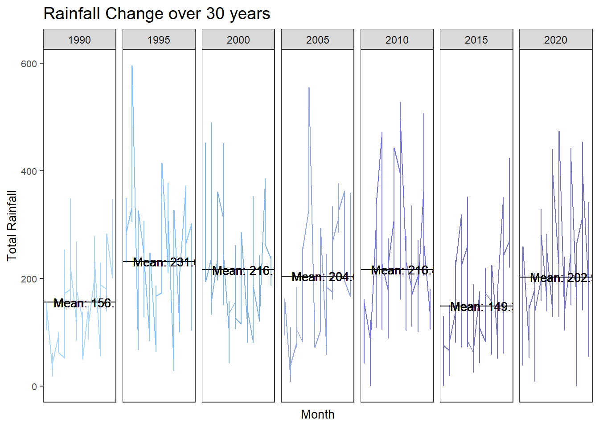
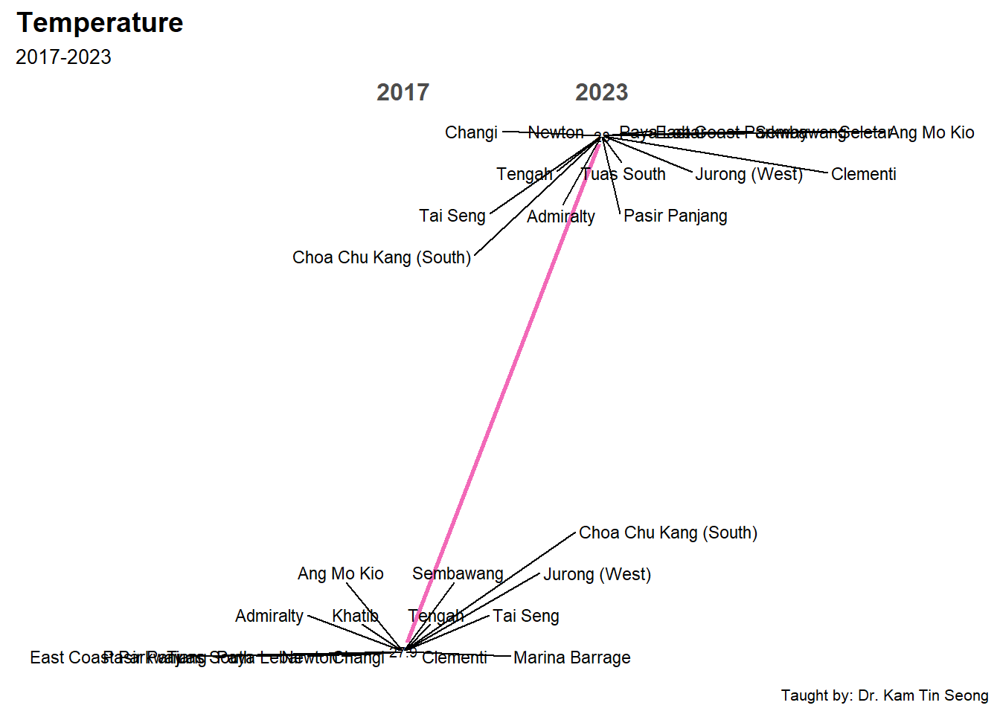

pacman::p_load(tidyverse, ggiraph, reshape, ggthemes,
gganimate, plotly, scales, ggHoriPlot, ggrepel,
CGPfunctions, ggTimeSeries, datagovsgR, neaSG)Prototype - Time Series Analysis
1. Load Packages
2. Import Data
Temp_YM <- readRDS("data/temperature.rds")
Rainfall_YM <- readRDS("data/rainfall.rds")3. Overview
3.1 Dashboard
Prototype
Total Stations
station_count <- Temp_YM %>%
summarise(Station_Count = n_distinct(Station))
station_count# A tibble: 1 × 1
Station_Count
<int>
1 18Mean Temperature
mean_temperature <- Temp_YM %>%
summarise(Mean_Temperature = round(mean(MeanTemp, na.rm = TRUE), 1))
mean_temperature# A tibble: 1 × 1
Mean_Temperature
<dbl>
1 27.7Total Rainfall
mean_totalrainfall <- Rainfall_YM %>%
summarise(Mean_Total_Rainfall = round(mean(TotalRainfall, na.rm = TRUE), 1))
mean_totalrainfall# A tibble: 1 × 1
Mean_Total_Rainfall
<dbl>
1 206.3.2 Live Weather Forecast
Weather Forecast
This functions calls upon the weather forecast API from data.gov.sg and returns a data frame con- taining different metrics of the forecast. 2-hour, 24-hour and 4-day forecasts are availible. This data provided by the API is updated half-hourly.
current_time <- Sys.time()
formatted_date <- format(current_time, "%Y-%m-%d")
formatted_time <- format(current_time, "%H:%M:%S")
formatted_datetime <- paste(formatted_date, formatted_time, sep = "T")weather_forecast(formatted_datetime) area forecast
1 Ang Mo Kio Cloudy
2 Bedok Cloudy
3 Bishan Cloudy
4 Boon Lay Cloudy
5 Bukit Batok Cloudy
6 Bukit Merah Cloudy
7 Bukit Panjang Cloudy
8 Bukit Timah Cloudy
9 Central Water Catchment Cloudy
10 Changi Cloudy
11 Choa Chu Kang Cloudy
12 Clementi Cloudy
13 City Cloudy
14 Geylang Cloudy
15 Hougang Cloudy
16 Jalan Bahar Cloudy
17 Jurong East Cloudy
18 Jurong Island Cloudy
19 Jurong West Cloudy
20 Kallang Cloudy
21 Lim Chu Kang Cloudy
22 Mandai Cloudy
23 Marine Parade Cloudy
24 Novena Cloudy
25 Pasir Ris Cloudy
26 Paya Lebar Cloudy
27 Pioneer Cloudy
28 Pulau Tekong Cloudy
29 Pulau Ubin Cloudy
30 Punggol Cloudy
31 Queenstown Cloudy
32 Seletar Cloudy
33 Sembawang Cloudy
34 Sengkang Cloudy
35 Sentosa Cloudy
36 Serangoon Cloudy
37 Southern Islands Cloudy
38 Sungei Kadut Cloudy
39 Tampines Cloudy
40 Tanglin Cloudy
41 Tengah Cloudy
42 Toa Payoh Cloudy
43 Tuas Cloudy
44 Western Islands Cloudy
45 Western Water Catchment Cloudy
46 Woodlands Cloudy
47 Yishun CloudyAir Temperature
get_airtemp(formatted_date, formatted_date)[1] "2024-04-01"
[1] "2024-04-01" timestamp readings.station_id readings.value
<char> <char> <num>
1: 2024-04-01T00:01:00+08:00 S109 28.0
2: 2024-04-01T00:02:00+08:00 S109 28.0
3: 2024-04-01T00:03:00+08:00 S109 28.0
4: 2024-04-01T00:04:00+08:00 S109 28.0
5: 2024-04-01T00:05:00+08:00 S109 28.0
---
1410: 2024-04-01T23:31:00+08:00 S109 28.8
1411: 2024-04-01T23:32:00+08:00 S109 28.7
1412: 2024-04-01T23:33:00+08:00 S109 28.7
1413: 2024-04-01T23:34:00+08:00 S109 28.7
1414: 2024-04-01T23:35:00+08:00 S43 29.4
readings.station_id.1 readings.value.1 readings.station_id.2
<char> <num> <char>
1: S117 28.8 S50
2: S117 28.8 S50
3: S117 28.8 S50
4: S117 28.8 S50
5: S117 28.8 S50
---
1410: S117 29.2 S50
1411: S117 29.2 S50
1412: S117 29.2 S50
1413: S117 29.2 S50
1414: S44 29.2 S111
readings.value.2 readings.station_id.3 readings.value.3
<num> <char> <num>
1: 27.6 S107 29.3
2: 27.6 S107 29.3
3: 27.6 S107 29.4
4: 27.5 S107 29.4
5: 27.5 S107 29.4
---
1410: 28.4 S107 29.4
1411: 28.4 S107 29.4
1412: 28.4 S107 29.4
1413: 28.4 S107 29.4
1414: 28.4 S115 29.4
readings.station_id.4 readings.value.4 readings.station_id.5
<char> <num> <char>
1: S43 28.8 S44
2: S43 28.7 S44
3: S43 28.7 S44
4: S43 28.8 S44
5: S43 28.8 S44
---
1410: S44 29.2 S121
1411: S43 29.4 S44
1412: S43 29.4 S44
1413: S43 29.4 S44
1414: <NA> NA <NA>
readings.value.5 readings.station_id.6 readings.value.6
<num> <char> <num>
1: 27.4 S121 27.1
2: 27.4 S121 27.0
3: 27.4 S121 27.1
4: 27.4 S121 27.1
5: 27.4 S121 27.0
---
1410: 28.6 S111 28.4
1411: 29.2 S121 28.6
1412: 29.2 S121 28.6
1413: 29.2 S121 28.6
1414: NA <NA> NA
readings.station_id.7 readings.value.7 readings.station_id.8
<char> <num> <char>
1: S111 28.1 S24
2: S111 28.1 S24
3: S111 28.1 S115
4: S111 28.1 S115
5: S111 28.1 S115
---
1410: S60 29.1 S24
1411: S111 28.4 S60
1412: S111 28.4 S60
1413: S111 28.4 S60
1414: <NA> NA <NA>
readings.value.8 readings.station_id.9 readings.value.9
<num> <char> <num>
1: 28.2 S116 28.8
2: 28.2 S116 28.8
3: 28.8 S24 28.2
4: 28.7 S24 28.2
5: 28.7 S24 28.2
---
1410: 29.2 S116 29.2
1411: 29.1 S24 29.1
1412: 29.1 S115 29.5
1413: 29.1 S115 29.5
1414: NA <NA> NA
readings.station_id.10 readings.value.10 readings.station_id.11
<char> <num> <char>
1: S104 27.3 <NA>
2: S104 27.3 <NA>
3: S116 28.8 S104
4: S116 28.7 S104
5: S116 28.7 S104
---
1410: S104 28.8 <NA>
1411: S116 29.2 S104
1412: S24 29.1 S116
1413: S24 29.1 S116
1414: <NA> NA <NA>
readings.value.11 readings.station_id.12 readings.value.12
<num> <char> <num>
1: NA <NA> NA
2: NA <NA> NA
3: 27.3 <NA> NA
4: 27.3 <NA> NA
5: 27.2 <NA> NA
---
1410: NA <NA> NA
1411: 28.8 <NA> NA
1412: 29.2 S104 28.8
1413: 29.2 S104 28.7
1414: NA <NA> NAlatest_airtemp <- head(get_airtemp(formatted_date, formatted_date), n = 1)[1] "2024-04-01"
[1] "2024-04-01"column_names <- paste0("readings.value.", 1:12)
values <- sapply(column_names, function(col) latest_airtemp[[col]])
average_value <- mean(values, na.rm = TRUE)
print(average_value)[1] 28.14Ultra-violet Index
This functions calls upon the UVI API from data.gov.sg and returns a data frame of the different measures of the UVI across Singapore and returns the closest UVI value presently and for the past few hours. This data provided by the API is updated hourly.
uvi(formatted_datetime) value timestamp
1 0 2024-04-01T19:00:00+08:00
2 1 2024-04-01T18:00:00+08:00
3 3 2024-04-01T17:00:00+08:00
4 5 2024-04-01T16:00:00+08:00
5 6 2024-04-01T15:00:00+08:00
6 8 2024-04-01T14:00:00+08:00
7 7 2024-04-01T13:00:00+08:00
8 6 2024-04-01T12:00:00+08:00
9 4 2024-04-01T11:00:00+08:00
10 2 2024-04-01T10:00:00+08:00
11 1 2024-04-01T09:00:00+08:00
12 0 2024-04-01T08:00:00+08:00
13 0 2024-04-01T07:00:00+08:00# Display only the latest timestamp
# Retrieve the UV index for the latest timestamp
latest_uvi <- head(uvi(formatted_datetime), n = 1)
print(latest_uvi$value)[1] 03.3 Animation
Temperature
MeanTemp_Year <- Temp_YM %>%
group_by(Year) %>%
summarise(MeanTemp_Year = round(mean(MeanTemp, na.rm = TRUE), 1))
Temp_YM <- left_join(Temp_YM, MeanTemp_Year, by = c("Year"))
glimpse(Temp_YM)Rows: 3,715
Columns: 9
$ Station <chr> "Admiralty", "Admiralty", "Admiralty", "Admiralty", "Adm…
$ Region <chr> "North", "North", "North", "North", "North", "North", "N…
$ Year <dbl> 2009, 2009, 2009, 2009, 2009, 2009, 2009, 2009, 2009, 20…
$ Month <ord> Jan, Feb, Mar, Apr, May, Jun, Jul, Aug, Sep, Oct, Nov, D…
$ Date <date> 2009-01-01, 2009-02-01, 2009-03-01, 2009-04-01, 2009-05…
$ MeanTemp <dbl> 26.3, 26.8, 26.9, 28.1, 28.5, 28.9, 28.1, 28.1, 28.3, 28…
$ MaxTemp <dbl> 31.9, 33.4, 34.5, 35.1, 34.7, 34.7, 33.7, 33.6, 34.3, 34…
$ MinTemp <dbl> 23.3, 23.0, 22.2, 23.7, 21.8, 23.7, 22.5, 22.7, 23.1, 22…
$ MeanTemp_Year <dbl> 27.6, 27.6, 27.6, 27.6, 27.6, 27.6, 27.6, 27.6, 27.6, 27…ggplot(Temp_YM, aes(x = Month, y = MeanTemp)) +
geom_point(aes(color = MeanTemp), alpha = 0.5, size = 4, show.legend = FALSE) +
scale_color_gradient(low = "darkorange", high = "darkred") +
geom_boxplot(aes(y = MeanTemp_Year), width = 0.8, color = "darkgoldenrod1") +
scale_size(range = c(2, 12)) +
labs(title = 'Mean Temperature, 1986-2023 \nYear: {frame_time}',
x = 'Month',
y = 'Mean Temperature (°C)') +
transition_time(as.integer(Year)) +
ease_aes('linear') +
theme(legend.position = "right",
panel.grid.major = element_blank(),
panel.grid.minor = element_blank()) +
guides(color = guide_legend(title = "Average Temperature", override.aes = list(color = "grey", linetype = "dashed"))) +
theme_hc()Rainfall
TotalRainfall_Year <- Rainfall_YM %>%
group_by(Year) %>%
summarise(MeanRainfall_Year = round(mean(TotalRainfall, na.rm = TRUE), 1))
Rainfall_YM <- left_join(Rainfall_YM, TotalRainfall_Year, by = c("Year"))
glimpse(Rainfall_YM)Rows: 5,547
Columns: 10
$ Station <chr> "Admiralty", "Admiralty", "Admiralty", "Admiralty", …
$ Region <chr> "North", "North", "North", "North", "North", "North"…
$ Year <dbl> 2009, 2009, 2009, 2009, 2009, 2009, 2009, 2009, 2009…
$ Month <ord> Jan, Feb, Mar, Apr, May, Jun, Jul, Aug, Sep, Oct, No…
$ Date <date> 2009-01-01, 2009-02-01, 2009-03-01, 2009-04-01, 200…
$ TotalRainfall <dbl> 0.8, 148.0, 348.0, 148.8, 205.6, 92.0, 103.0, 90.2, …
$ TotalRainfall30 <dbl> 0, 0, 0, 0, 0, 0, 0, 0, 0, 0, 0, 0, 0, 0, 0, 0, 0, 0…
$ TotalRainfall60 <dbl> 0, 0, 0, 0, 0, 0, 0, 0, 0, 0, 0, 0, 0, 0, 0, 0, 0, 0…
$ TotalRainfall120 <dbl> 0, 0, 0, 0, 0, 0, 0, 0, 0, 0, 0, 0, 0, 0, 0, 0, 0, 0…
$ MeanRainfall_Year <dbl> 172.5, 172.5, 172.5, 172.5, 172.5, 172.5, 172.5, 172…ggplot(Rainfall_YM, aes(x = Month, y = TotalRainfall)) +
geom_point(aes(color = TotalRainfall), shape = 17, alpha = 0.5, size = 4, show.legend = FALSE) +
scale_color_gradient(low = "lightblue", high = "darkblue") +
geom_boxplot(aes(y = MeanRainfall_Year), width = 0.8, color = "cornflowerblue") +
scale_size(range = c(2, 12)) +
labs(title = 'Total Rainfall, 1986-2023 \nYear: {frame_time}',
x = 'Month',
y = 'Total Rainfall (mm)') +
transition_time(as.integer(Year)) +
ease_aes('linear') +
theme(legend.position = "right",
panel.grid.major = element_blank(),
panel.grid.minor = element_blank()) +
guides(color = guide_legend(title = "Total Rainfall", override.aes = list(color = "grey", linetype = "dashed"))) +
theme_hc()4. Time Series Analysis
Prototype
Temperature
Rainfall
4.1 Cycle Plot
# Selecting 5 years
selection <- c(1990, 1995, 2000, 2005, 2010, 2015, 2020)
# Filtering the dataframe for the selected years
cycle_input <- Temp_YM %>%
filter(Year %in% selection)
# Define darker pastel colors
palette <- c("gold1", "orange2", "darkorange", "darkorange1", "tomato1", "tomato3", "tomato4")
# Plot with darker pastel colors
ggplot(data = cycle_input) +
geom_hline(data = cycle_input,
aes(yintercept = `MeanTemp_Year`),
color = "black",
alpha = 1.0,
size = 0.4) +
geom_line(aes(x = Month,
y = MeanTemp,
group = Year,
color = as.factor(Year),
alpha = 0.6)) +
geom_text(data = cycle_input,
aes(x = 1, y = MeanTemp_Year - 0.05, label = paste0("Mean: ", sprintf("%.1f", MeanTemp_Year))),
hjust = -0.1, vjust = 0.5, color = "black", size = 3.5) +
facet_grid(~Year) +
labs(x = "Month",
y = "Mean Temperature") +
ggtitle("Temperature Change over 30 years") +
theme_bw() +
theme(legend.position = "none",
axis.text.x = element_blank(),
axis.ticks.x = element_blank(),
axis.title = element_text(size = 10),
title = element_text(size =12),
axis.text.y = element_text(size = 8),
panel.grid.major = element_blank(),
panel.grid.minor = element_blank()) +
scale_color_manual(values = palette)# Filtering the dataframe for the selected years
cycle_input <- Rainfall_YM %>%
filter(Year %in% selection)
# Define darker pastel colors
palette <- c("steelblue1", "dodgerblue", "dodgerblue3", "royalblue3", "blue3", "blue4", "darkblue")
# Plot with darker pastel colors
ggplot(data = cycle_input) +
geom_hline(data = cycle_input,
aes(yintercept = `MeanRainfall_Year`),
color = "black",
alpha = 1.0,
size = 0.4) +
geom_line(aes(x = Month,
y = TotalRainfall,
group = Year,
color = as.factor(Year),
alpha = 0.6)) +
geom_text(data = cycle_input,
aes(x = 1, y = MeanRainfall_Year - 0.05, label = paste0("Mean: ", sprintf("%.1f", MeanRainfall_Year))),
hjust = -0.1, vjust = 0.5, color = "black", size = 3.5) +
facet_grid(~Year) +
labs(x = "Month",
y = "Total Rainfall") +
ggtitle("Rainfall Change over 30 years") +
theme_bw() +
theme(legend.position = "none",
axis.text.x = element_blank(),
axis.ticks.x = element_blank(),
axis.title = element_text(size = 10),
title = element_text(size =12),
axis.text.y = element_text(size = 8),
panel.grid.major = element_blank(),
panel.grid.minor = element_blank()) +
scale_color_manual(values = palette)
Transformation to Shiny App
UI
UI(fluidPage(
titlePanel("Temperature and Rainfall Analysis"),
sidebarLayout(
sidebarPanel(
selectInput("data", "Select Data:",
choices = c("Temperature", "Rainfall")),
sliderInput("period", "Select Period:",
min = 1980, max = 2023, value = c(1990, 2020)),
selectInput("region", "Select Region:",
choices = c("Region A", "Region B", "Region C")),
selectInput("station", "Select Station:",
choices = c("Station 1", "Station 2", "Station 3"))
),
mainPanel(
plotOutput("plot")
)
)
))Server
Server(function(input, output) {
output$plot <- renderPlot({
# Filter data based on user inputs
filtered_data <- filter_data(input$data, input$period[1], input$period[2],
input$region, input$station)
# Plotting based on filtered data
ggplot(filtered_data) +
geom_line(aes(x = Month, y = MeanTemp, group = Year, color = as.factor(Year)),
alpha = 0.6) +
labs(x = "Month", y = ifelse(input$data == "Temperature", "Mean Temperature", "Total Rainfall")) +
ggtitle(ifelse(input$data == "Temperature", "Temperature Change over Time", "Rainfall over Time")) +
theme_minimal()
})
# Function to filter data based on user inputs
filter_data <- function(data_type, start_year, end_year, region, station) {
# Your data filtering logic here based on user inputs
# For demonstration, let's assume you have a dataframe called "data"
# with columns: Month, Year, MeanTemp, TotalRainfall, Region, Station
filtered_data <- data %>%
filter(Year >= start_year, Year <= end_year,
Region == region, Station == station)
if (data_type == "Temperature") {
return(filtered_data %>% select(Month, Year, MeanTemp))
} else {
return(filtered_data %>% select(Month, Year, TotalRainfall))
}
}
})4.2 Slope Graph
Temp_YM %>%
mutate(Year = factor(Year),
Station = factor(Station)) %>%
filter(Year %in% c(2017, 2023)) %>%
newggslopegraph(Year, MeanTemp_Year, Station,
Title = "Temperature",
SubTitle = "1983-2023",
Caption = "Taught by: Dr. Kam Tin Seong")Temp_slope <- Temp_YM %>%
select(Station, Year, MeanTemp_Year) %>%
distinct()
Temp_slope <- Temp_slope %>%
mutate(Year = factor(Year))
Temp_slope_filtered <- Temp_slope %>%
filter(Year %in% c(2017, 2023))
slope_plot <- newggslopegraph(data = Temp_slope_filtered,
Year, MeanTemp_Year, Station,
Title = "Temperature",
SubTitle = "2017-2023",
Caption = "Taught by: Dr. Kam Tin Seong")
slope_plot + geom_text_repel(aes(label = Station), size = 3, box.padding = 0.5, max.overlaps = Inf)
Rainfall_YM %>%
mutate(Year = factor(Year),
Station = factor(Station)) %>%
filter(Year %in% c(2017, 2023)) %>%
newggslopegraph(Year, MeanRainfall_Year, Station,
Title = "Rainfall",
SubTitle = "1983-2023",
Caption = "Taught by: Dr. Kam Tin Seong")Rainfall_slope <- Rainfall_YM %>%
select(Station, Year, MeanRainfall_Year) %>%
distinct()
Rainfall_slope <- Rainfall_slope %>%
mutate(Year = factor(Year))
Rainfall_slope_filtered <- Rainfall_slope %>%
filter(Year %in% c(2017, 2023))
slope_plot <- newggslopegraph(data = Rainfall_slope_filtered,
Year, MeanRainfall_Year, Station,
Title = "Rainfall",
SubTitle = "2017-2023",
Caption = "Taught by: Dr. Kam Tin Seong")
slope_plot + geom_text_repel(aes(label = Station), size = 3, box.padding = 0.5, max.overlaps = Inf)4.3 Horizon Graph
ggplot(Temp_YM) +
geom_horizon(aes(x = Date, y = MeanTemp),
origin = "midpoint",
horizonscale = 6) +
facet_grid(`Station`~.) +
theme_few() +
scale_fill_hcl(palette = 'RdBu') +
theme(panel.spacing.y=unit(0, "lines"), strip.text.y = element_text(
size = 5, angle = 0, hjust = 0),
legend.position = 'none',
axis.text.y = element_blank(),
axis.text.x = element_text(size=7),
axis.title.y = element_blank(),
axis.title.x = element_blank(),
axis.ticks.y = element_blank(),
panel.border = element_blank()) +
ggtitle('Temperature')# Filter data for years 2010 to 2023
Temp_YM_filtered <- Temp_YM %>%
filter(Year >= 2010 & Year <= 2023)
# Plot the filtered data
ggplot(Temp_YM_filtered) +
geom_horizon(aes(x = Date, y = MeanTemp),
origin = "midpoint",
horizonscale = 6) +
facet_grid(`Station`~.) +
theme_few() +
scale_fill_hcl(palette = 'RdBu') +
theme(panel.spacing.y = unit(0, "lines"),
strip.text.y = element_text(size = 5, angle = 0, hjust = 0),
legend.position = 'none',
axis.text.y = element_blank(),
axis.text.x = element_text(size = 7),
axis.title.y = element_blank(),
axis.title.x = element_blank(),
axis.ticks.y = element_blank(),
panel.border = element_blank()) +
ggtitle('Temperature, 2010-2023')# Filter data for years 2010 to 2023
Temp_YM_filtered <- Temp_YM %>%
filter(Year >= 2010 & Year <= 2023)
# Plot the filtered data
ggplot(Temp_YM_filtered) +
geom_horizon(aes(x = Date, y = MeanTemp),
origin = "midpoint",
horizonscale = 6) +
facet_grid(`Region`~.) +
theme_few() +
scale_fill_hcl(palette = 'RdBu') +
theme(panel.spacing.y = unit(0, "lines"),
strip.text.y = element_text(size = 5, angle = 0, hjust = 0),
legend.position = 'none',
axis.text.y = element_blank(),
axis.text.x = element_text(size = 7),
axis.title.y = element_blank(),
axis.title.x = element_blank(),
axis.ticks.y = element_blank(),
panel.border = element_blank()) +
ggtitle('Temperature, 2010-2023')ggplot(Rainfall_YM) +
geom_horizon(aes(x = Date, y = TotalRainfall),
origin = "midpoint",
horizonscale = 6) +
facet_grid(`Station`~.) +
theme_few() +
scale_fill_hcl(palette = 'RdBu') +
theme(panel.spacing.y=unit(0, "lines"), strip.text.y = element_text(
size = 5, angle = 0, hjust = 0),
legend.position = 'none',
axis.text.y = element_blank(),
axis.text.x = element_text(size=7),
axis.title.y = element_blank(),
axis.title.x = element_blank(),
axis.ticks.y = element_blank(),
panel.border = element_blank()) +
ggtitle('Rainfall')# Filter data for years 2010 to 2023
Rainfall_YM_filtered <- Rainfall_YM %>%
filter(Year >= 2010 & Year <= 2023)
# Plot the filtered data
ggplot(Rainfall_YM_filtered) +
geom_horizon(aes(x = Date, y = TotalRainfall),
origin = "midpoint",
horizonscale = 6) +
facet_grid(`Station`~.) +
theme_few() +
scale_fill_hcl(palette = 'RdBu') +
theme(panel.spacing.y = unit(0, "lines"),
strip.text.y = element_text(size = 5, angle = 0, hjust = 0),
legend.position = 'right',
axis.text.y = element_blank(),
axis.text.x = element_text(size = 7),
axis.title.y = element_blank(),
axis.title.x = element_blank(),
axis.ticks.y = element_blank(),
panel.border = element_blank()) +
ggtitle('Rainfall, 2010-2023')# Filter data for years 2010 to 2023
Rainfall_YM_filtered <- Rainfall_YM %>%
filter(Year >= 2010 & Year <= 2023)
# Plot the filtered data
ggplot(Rainfall_YM_filtered) +
geom_horizon(aes(x = Date, y = TotalRainfall),
origin = "midpoint",
horizonscale = 6) +
facet_grid(`Region`~.) +
theme_few() +
scale_fill_hcl(palette = 'RdBu') +
theme(panel.spacing.y = unit(0, "lines"),
strip.text.y = element_text(size = 5, angle = 0, hjust = 0),
legend.position = 'right',
axis.text.y = element_blank(),
axis.text.x = element_text(size = 7),
axis.title.y = element_blank(),
axis.title.x = element_blank(),
axis.ticks.y = element_blank(),
panel.border = element_blank()) +
ggtitle('Rainfall, 2010-2023')Tranformation to Shiny App
UI(fluidPage(
titlePanel("Temperature and Rainfall Analysis"),
sidebarLayout(
sidebarPanel(
selectInput("data", "Select Data:",
choices = c("Temperature", "Rainfall")),
sliderInput("period", "Select Period:",
min = 1980, max = 2023, value = c(2010, 2023)),
selectInput("region", "Select Region:",
choices = c("Region A", "Region B", "Region C")),
selectInput("station", "Select Station:",
choices = c("Station 1", "Station 2", "Station 3"))
),
mainPanel(
plotOutput("plot")
)
)
))Server(function(input, output) {
output$plot <- renderPlot({
# Filter data based on user inputs
filtered_data <- filter_data(input$data, input$period[1], input$period[2],
input$region, input$station)
# Plotting based on filtered data
ggplot(filtered_data) +
geom_horizon(aes(x = Date, y = MeanTemp),
origin = "midpoint",
horizonscale = 6) +
facet_grid(Station ~ .) +
theme_few() +
scale_fill_hcl(palette = 'RdBu') +
theme(panel.spacing.y = unit(0, "lines"),
strip.text.y = element_text(size = 5, angle = 0, hjust = 0),
legend.position = 'none',
axis.text.y = element_blank(),
axis.text.x = element_text(size = 7),
axis.title.y = element_blank(),
axis.title.x = element_blank(),
axis.ticks.y = element_blank(),
panel.border = element_blank()) +
ggtitle(paste(input$data, "(", input$period[1], "-", input$period[2], ")"))
})
# Function to filter data based on user inputs
filter_data <- function(data_type, start_year, end_year, region, station) {
Temp_YM_filtered <- Temp_YM %>%
filter(Year >= start_year, Year <= end_year,
Region == region, Station == station)
if (data_type == "Temperature") {
return(Temp_YM_filtered)
}
}
}
)4.4 Boxplot
Temp_YM$mean_tooltip <- c(paste0("Year: ", Temp_YM$Year,
"\n Station: ", Temp_YM$Station,
"\n Mean Temp: ", Temp_YM$MeanTemp, "°C"))
line <- ggplot(data = Temp_YM,
aes(x = Year, y = MeanTemp, group = Station, color = Station, data_id = Station)) +
geom_line_interactive(size = 1.2, alpha = 0.4) +
geom_point_interactive(aes(tooltip = Temp_YM$mean_tooltip),
fill = "white", size = 1, stroke = 1, shape = 21) +
theme_classic() +
ylab("Annual Mean Temperature (°C)") +
xlab("Year") +
ggtitle("Annual Average of Mean Temperatures") +
theme(plot.title = element_text(size = 10),
plot.subtitle = element_text(size = 8))
girafe(ggobj = line, width_svg = 8, height_svg = 6 * 0.618,
options = list(opts_hover(css = "stroke-width: 2.5; opacity: 1;"),
opts_hover_inv(css = "stroke-width: 1;opacity:0.6;")))Tranformation to Shiny App
UI
ui <- fluidPage(
titlePanel("Interactive Temperature Graph"),
sidebarLayout(
sidebarPanel(
selectInput("station", "Select Station:", choices = unique(Temp_YM$Station)),
sliderInput("year", "Select Year:", min = min(Temp_YM$Year), max = max(Temp_YM$Year),
value = c(min(Temp_YM$Year), max(Temp_YM$Year)), step = 1)
),
mainPanel(
plotlyOutput("temperature_plot")
)
)
)Server
function(input, output) {
filtered_data <- reactive({
temp_year %>%
filter(Station == input$station & Year >= input$year[1] & Year <= input$year[2])
})
output$temperature_plot <- renderPlotly({
ggplot(data = filtered_data(), aes(x = Year, y = MeanTemp, group = Station, color = Station)) +
geom_line(size = 1.2, alpha = 0.4) +
geom_point(aes(text = mean_tooltip), fill = "white", size = 3, shape = 21) +
theme_classic() +
xlab("Year") +
ylab("Annual Mean Temperature (°C)") +
ggtitle("Annual Average of Mean Temperatures") +
theme(plot.title = element_text(size = 10), plot.subtitle = element_text(size = 8))
ggplotly(gg, tooltip = "text")
})
}4.5 Violin Plot
Temp_YM_filtered <- Temp_YM %>%
filter(Year == "2023")
plot_ly(data = Temp_YM_filtered,
x = ~ Station,
y = ~ MeanTemp,
line = list(width=1),
type = "violin",
spanmode = 'hard',
marker = list(opacity = 0.5, line = list(width = 2)),
box = list(visible = T),
points = 'all',
scalemode = 'count',
meanline = list(visible = T, color = "red"),
color = I('#caced8'),
marker = list(line = list(width = 2, color = '#caced8'), symbol = 'line-ns'))Transformation to Shiny App
UI
ui <- fluidPage(
titlePanel("Interactive Temperature Graph"),
sidebarLayout(
sidebarPanel(
selectInput("station", "Select Station:", choices = unique(Temp_YM$Station)),
sliderInput("year", "Select Year:", min = min(Temp_YM$Year), max = max(Temp_YM$Year),
value = c(min(Temp_YM$Year), max(Temp_YM$Year)), step = 1)
),
mainPanel(
plotlyOutput("temperature_plot")
)
)
)Server
server <- function(input, output) {
filtered_data <- reactive({
Temp_YM %>%
filter(Station == input$station & Year >= input$year[1] & Year <= input$year[2])
})
output$temperature_plot <- renderPlotly({
gg <- ggplot(data = Temp_YM_filtered(), aes(x = Year, y = MeanTemp, group = Station, color = Station)) +
geom_line(size = 1.2, alpha = 0.4) +
geom_point(aes(text = mean_tooltip), fill = "white", size = 3, shape = 21) +
theme_classic() +
ylab("Annual Mean Temperature (°C)") +
xlab("Year") +
ggtitle("Annual Average of Mean Temperatures") +
theme(plot.title = element_text(size = 10),
plot.subtitle = element_text(size = 8))
ggplotly(gg, tooltip = "text")
})
}4.6 Calendar Heatmap
p <- ggplot(Temp_YM, aes(x = Month, y = Year, fill = MeanTemp)) +
geom_tile(color = "white") +
theme_tufte(base_family = "Helvetica") +
scale_fill_gradient(low = "gold", high = "goldenrod3") +
labs(title = "Calendar Heatmap of Mean Temperature: 2013-2023", x = "Month", y = "Year", fill = "Temperature") +
theme_minimal() +
theme(axis.ticks = element_blank(),
plot.title = element_text(hjust = 0.5),
legend.title = element_text(size = 8),
legend.text = element_text(size = 6) )
ggplotly(p)References: https://cran.r-project.org/web/packages/datagovsgR/datagovsgR.pdf